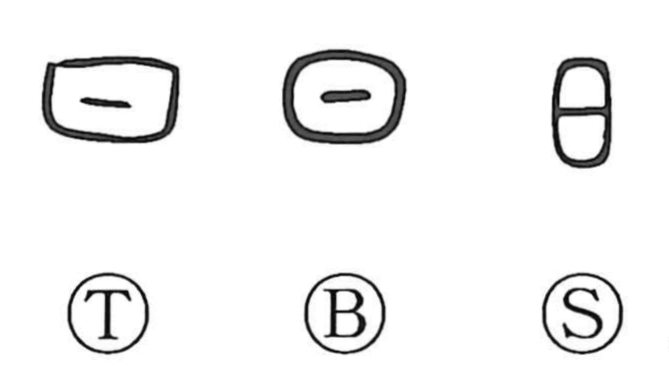

日

Kun: hi, ka, hiru | On: nichi, jitsu
sun ・ day ・ light
Explanation
A pictograph of the sun: a round disk marked with a central dot to show it is not an empty circle but a body with substance. Because the sun, unlike the moon, has no phases, the figure is drawn as a consistent circle. From this image the character came to mean day, the sun itself, and light. The Sino-Japanese reading jitsu is sometimes explained by association with 実, “fullness,” evoking the sun that fills and enriches. In Japanese it also appears as ka in dates, as in yokka, “the fourth day.”